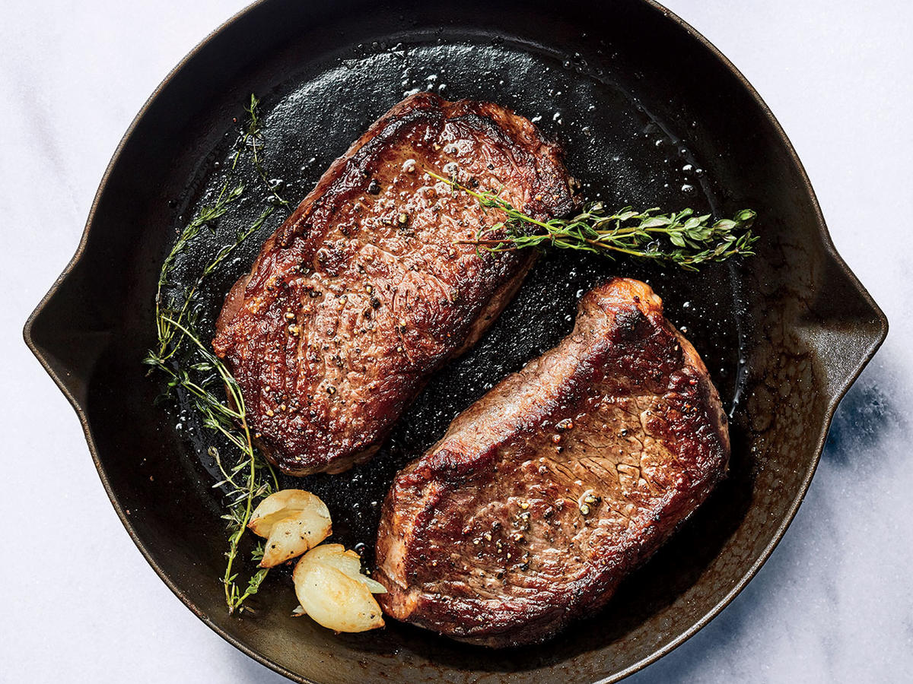

Pan Seared Steak

Juicy Steak Without the Grill
This is a great way to have a delicious steak even on a cold winters day. The best part is that you probably have everything you need to make it in your house right now! As long as you have the steak, of course.
Preparing this steak can take only a few minutes to cook depending on the thickness of the cut used, so it's great for a low effort dinner after a long day.
Ingredients
- Two of your favorite cuts of steak (I prefer sirloin)
- 1 1/2 tbsp of butter
- Two whole cloves of garlic
- A bundle of fresh rosemary
- 2 tsp vegetable oil
- Salt and pepper to taste
Preparation
- Pour the vegetable oil in a frying pan and heat in on high. A cast iron skillet will work best, but any frying pan can get the job done.
- Liberally season both side on of your steaks with salt and pepper. Add to pan carefully (be mindfully of the hot oil).
- Cook until a nice sear forms on the outside of your steak. Time will differ depending on what cut of steak you are using, but I would recommend not letting it sit for longer than a minute on each side. make sure to sear the side of the steak as well.
- Once you have developed a nice crust on the outside of the steak bring the temp down to medium. This next step goes fast, so make sure to have your butter, garlic, and rosemary ready to add.
- Add the butter, garlic, and rosemary to the pan. Tilt your pan at an angle and quickly spoon the melted butter over the steak. How long you do this will depend on what kind of steak you have and the desired level of doneness, but for sirloin it will only take around two minutes for two well done steaks.
- Place on a plate and allow to rest for a few minutes. Then pour over some of the remaining butter in the pan and enjoy!